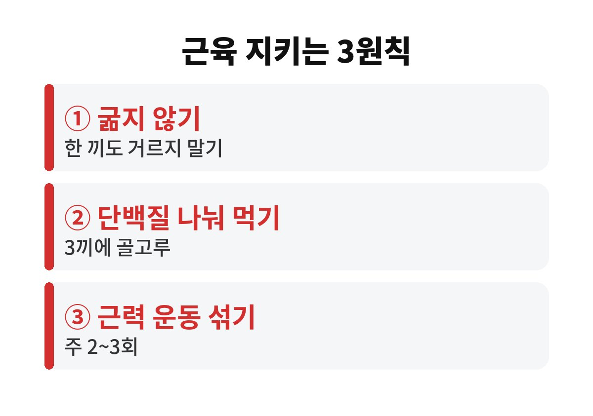
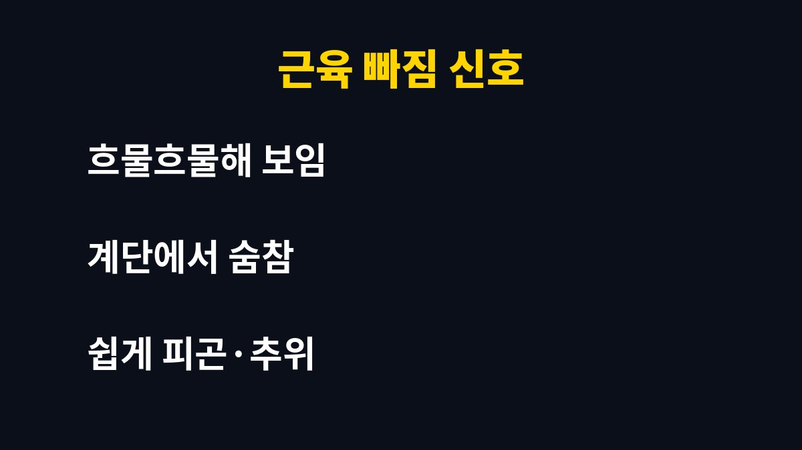

체중 감량 근육 손실은 굶어서 3kg을 빼는 사람에게도 충분히 일어날 수 있습니다. 숫자는 줄었는데 근육까지 빠졌다면, 지금 다이어트 중이라 뿌듯한 분들은 왜 몸이 더 처져 보이는지 궁금하지 않으세요?
체중계 숫자만 보고 기뻐하다가 거울 앞에서 "어, 이상하네?" 하는 순간이 오죠. 빠진 게 지방만이 아니라서 그렇습니다. 오늘은 체중 감량 근육 문제를 쉽게 풀어 보겠습니다.
몸은 에너지가 부족하면 지방만 골라서 쓰지 않습니다. 먹는 양이 급격히 줄면 근육 속 단백질도 에너지원으로 끌어다 씁니다. 특히 한 끼를 굶거나 원푸드로 버티는 방식은 근육이 빠지기 쉬운 대표 패턴이에요.
근육은 가만히 있어도 에너지를 쓰는 조직입니다. 근육이 줄면 기초대사량도 같이 내려가고, 그러면 같은 양을 먹어도 살이 잘 안 빠지거나 요요가 오기 쉽습니다. 그래서 체중 감량 근육 관리가 중요한 겁니다.
이런 변화가 보인다면 한 번 점검해 보세요.
① 체중은 줄었는데 몸이 탄탄해지기는커녕 흐물흐물해 보인다.
② 계단만 올라도 예전보다 숨이 차고 힘이 없다.
③ 쉽게 피곤하고 추위를 더 많이 탄다.
물론 사람마다 다르고, 이 신호만으로 근육 손실을 단정할 수는 없습니다. 다만 두세 가지가 겹친다면 식단과 운동 방식을 되돌아볼 타이밍입니다.
식단을 짤 때는 "무엇을 뺄까"보다 "무엇을 꼭 넣을까"를 먼저 생각해 보세요. 밥을 줄이더라도 반찬 한 가지는 단백질 식품으로 채우면 허기도 덜하고 근육도 지키기 쉽습니다. 간식이 당길 때는 과자 대신 삶은 달걀이나 무가당 요거트, 두유 같은 선택이 훨씬 낫습니다. 이런 작은 선택이 한 달, 두 달 쌓이면 몸의 모양이 확 달라집니다.
또 많은 분들이 놓치는 부분이 있습니다. 바로 체중계 숫자보다 허리둘레, 옷 사이즈, 체력 변화를 함께 보는 습관이에요. 숫자만 좇으면 근육이 빠져도 "성공"이라고 착각하기 쉽습니다. 일주일에 한 번 같은 조건에서 거울 사진을 찍어 비교해 보면 훨씬 정확하게 변화를 알 수 있어요.

가장 흔한 실수는 한 끼에 몰아서 먹는 것입니다. 단백질은 아침, 점심, 저녁에 나눠서 꾸준히 먹는 쪽이 근육 유지에 유리하다고 알려져 있어요. 달걀, 두부, 생선, 살코기, 콩류, 요거트처럼 부담 없는 식품부터 시작해 보세요.
구체적인 필요량은 나이, 체중, 활동량, 신장 건강 상태에 따라 다릅니다. 콩팥이 약하거나 만성질환이 있다면 마음대로 늘리지 말고 꼭 의료진과 상의하세요. 단백질 보충제도 식사로 부족할 때 보조로 쓰는 것이지 반드시 정답은 아닙니다.
걷기와 달리기만 하면 칼로리는 쓰지만 근육 자극은 부족할 수 있습니다. 일주일에 두세 번, 스쿼트나 벽 짚고 팔굽혀펴기 같은 가벼운 근력 운동을 섞어 보세요. 헬스장이 아니어도 집에서 충분히 가능합니다.
또 하나, 한 달에 너무 많이 빼려는 욕심은 내려놓으세요. 천천히 빼는 쪽이 근육을 지키고 요요도 덜합니다. 잠을 충분히 자는 것도 의외로 큰 도움이 돼요. 수면이 부족하면 식욕이 늘고 회복도 느려지거든요.
마지막으로 컨디션도 꼭 챙기세요. 다이어트 중에 어지럽거나 기운이 없고, 생리 주기가 흐트러지거나 머리카락이 눈에 띄게 빠진다면 영양이 부족하다는 몸의 경고일 수 있습니다. 이럴 땐 참고 버티지 말고 식사량을 되돌리고, 필요하면 병원에서 상담을 받아 보세요. 건강하게 오래 가는 다이어트가 결국 가장 빠른 길입니다.
수분 섭취도 은근히 중요합니다. 물을 충분히 마시면 포만감이 높아지고 몸의 컨디션도 유지돼서 운동할 힘이 나요. 반대로 물을 거의 안 마시고 커피로만 버티면 피로가 쌓여 근력 운동 자체를 포기하게 되죠. 식사 사이사이 물 한 컵씩 마시는 습관부터 시작해 보세요. 작은 습관이지만 꾸준히 이어 가면 체중 감량 근육 관리에도 분명 도움이 됩니다.
정리하면, 체중 감량 근육 지키기의 핵심은 세 가지입니다. 굶지 말고, 단백질을 나눠 먹고, 근력 운동을 조금이라도 섞는 것. 여러분은 지금 체중계 숫자와 거울 속 모습 중 어느 쪽을 더 믿고 계신가요? 댓글로 알려 주시고, 도움이 되셨다면 구독해 주세요.

본 글은 일반적인 건강 정보이며 진단·치료를 대신하지 않습니다. 증상이 있거나 질환이 있다면 전문의 상담을 권장합니다.